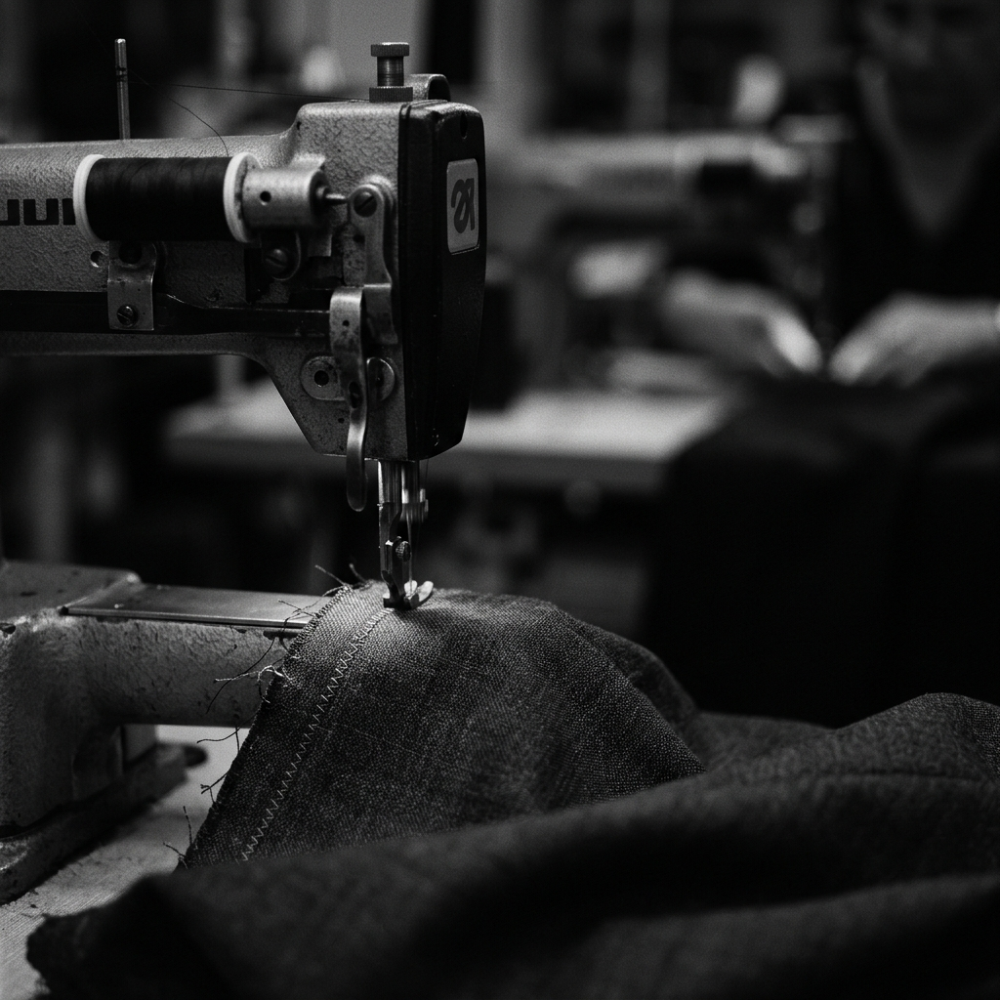

YUSAKA is a modern garment manufacturer delivering quality apparel with precision stitching, premium materials, and scalable production.
We blend luxury aesthetics with industrial reliability to supply the world's most demanding brands.
Founded by Kapil Joyee and Yukti Joyee, YUSAKA was born out of a passion for quality and a vision to redefine garment manufacturing in India. Based in the industrial hub of Gurugram, we combine traditional craftsmanship with state-of-the-art technology.

Every piece is a testament to our dedication to detail.
Consistent quality and timely delivery for every client.
Constantly evolving our processes for better results.